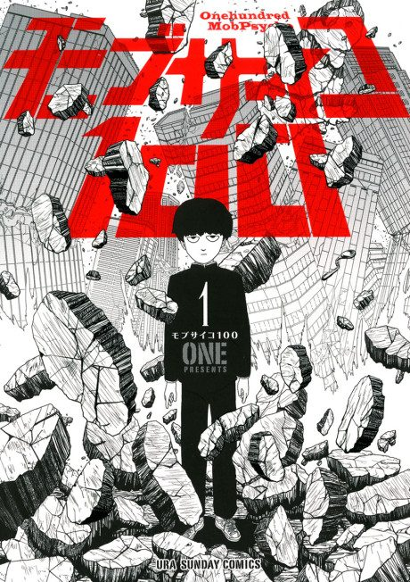

Animeter
← Rankings Anime
Anime
Manga2016 · Action, Comedy, Drama
Mob Psycho 100
モブサイコ100
AniList8.4
Animeter—
Season 112 ep
MangaAdapted
Key events
These are spoilers. They stay blurred until you reveal them, one at a time or all at once.
Dimple and Black Vinegar Middle School Ep 1–5
- Mob joins the Body Improvement Club to get stronger without powers.
- Mob blows away the evil spirit Dimple, who then tags along with him.
- Teru Hanazawa forces Mob into his ???% state, and Mob rebuilds the school yard afterward.
Claw 7th Division Ep 6–12
- Ritsu is kidnapped by Claw, and Mob and Teru storm their base.
- Reigen bluffs his way through Claw's espers to protect the kids.
- Mob's power flows into Reigen so Mob doesn't have to fight angry.
- Toichiro's son Sho Suzuki is introduced as a wildcard.
Mogami Ep 13–17
- Mob is trapped inside a possessed girl's mind by the spirit Mogami Keiji.
- Stripped of his powers, Mob endures a cruel illusionary life.
- Mob breaks the illusion with ???% power.
Reigen's Press Conference Ep 18–19
- Mob tells Reigen he wants to stop working for him.
- A televised press conference exposes Reigen as a fake.
- Mob stands up for Reigen, saying he always knew Reigen was a good person.
Claw's Seasoning City Invasion Ep 20–25
- Mob's house is burned and Claw fakes the deaths of his family to break him.
- Espers and Reigen ally to fight off Claw's elite.
- Mob absorbs Toichiro's overloaded energy, and broccoli in his pocket grows into a giant 'Divine Tree'.
Divine Tree Ep 26–31
- Dimple is revealed as the founder 'Psycho Helmet' and spreads a mind-controlling influence.
- Mob fights Dimple to free the brainwashed townspeople.
- Dimple gives up his dream of godhood and the tree is sent away.
Telepathy Club and the Aliens Ep 32–33
- The club's signal reaches a UFO on New Year's Eve.
- Mob's friends are beamed aboard an alien ship.
???% Ep 34–37
- Mob is hit by a truck saving a child, and his ???% self goes on a rampage.
- Teru and Ritsu fail to stop the rampage.
- Reigen confesses he has no powers, and Mob reunites with himself.
- Tsubomi turns down Mob's confession, and he accepts it.